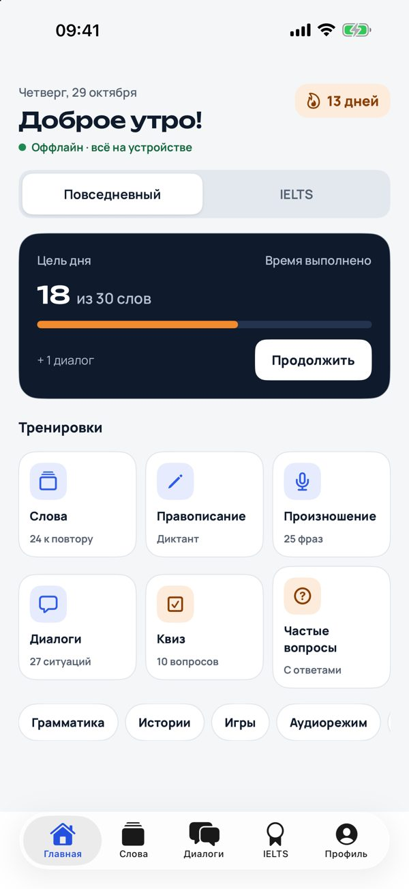
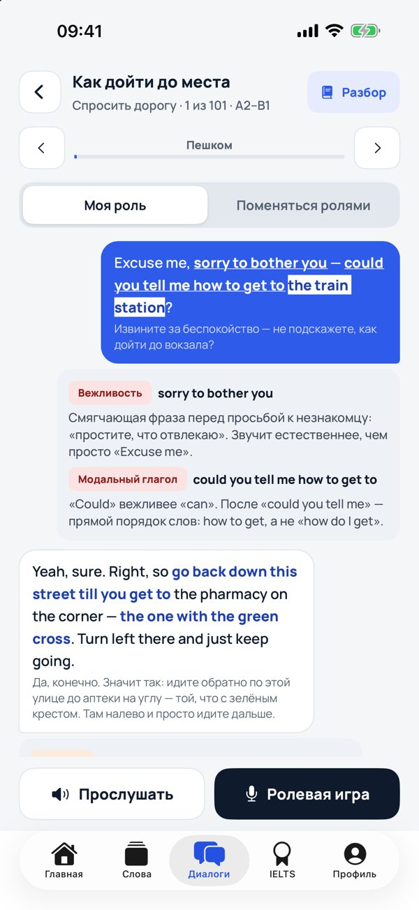
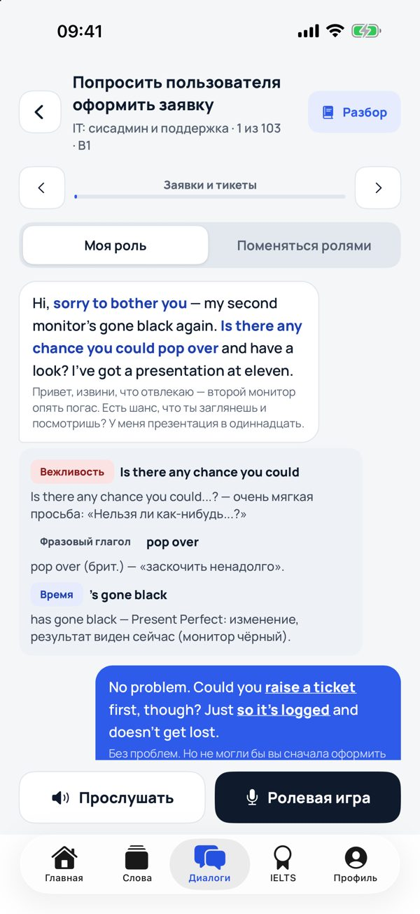
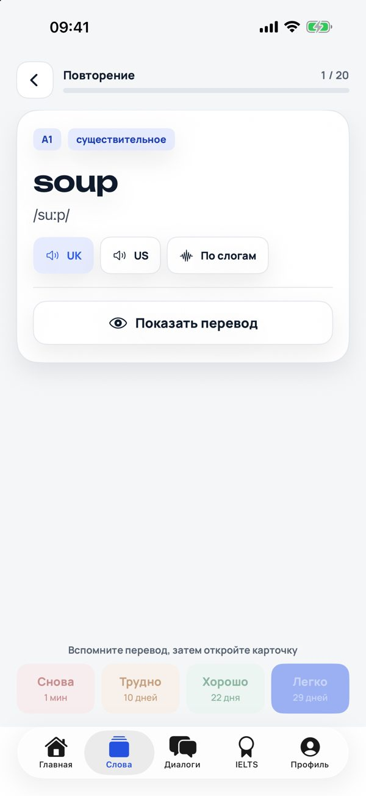
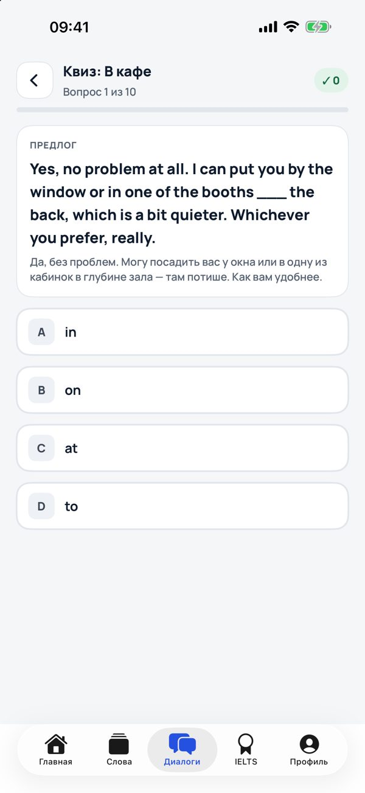
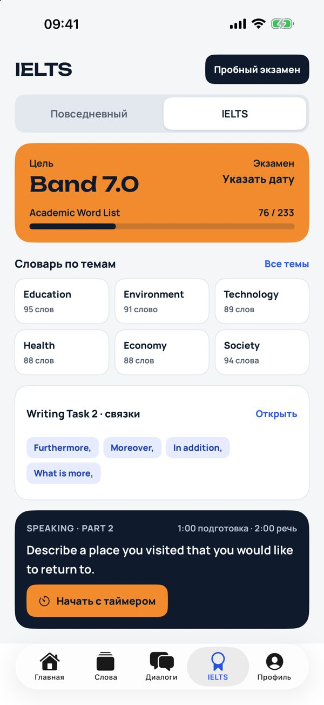
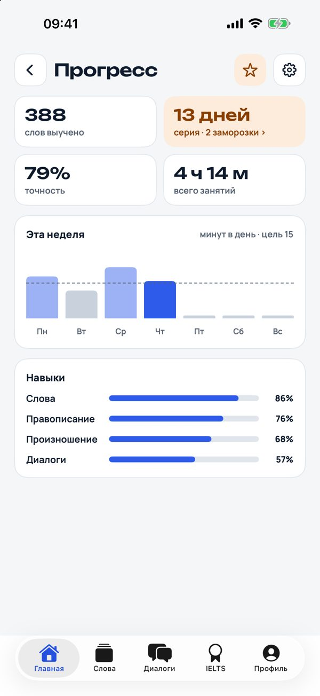

Английский, на котором действительно говорят
Живые диалоги для быта, путешествий и 17 профессий, интервальное повторение слов, произношение и подготовка к IELTS. Всё хранится на телефоне — ни аккаунта, ни рекламы.

Всё для разговорного английского
Каждая тренировка заканчивается проверкой — чтобы слова и фразы действительно запоминались.
Живые диалоги
Как говорят на самом деле: «пройдите мимо аптеки с зелёным крестом, у жёлтого банка направо». Ключевые фразы выделены, каждая реплика — с переводом.
Разбор каждой фразы
Почему здесь the, а не a, какой нужен предлог, время, вежливая форма, британский или американский вариант.
Закрепление квизами
После диалога, истории или эссе — вопросы на артикли, предлоги, ключевые фразы и «что ответить собеседнику».
Слова с повторением
Карточки с интервальным повторением: приложение само решает, когда показать слово снова. Свои наборы, импорт и слова с камеры.
Произношение
Распознавание речи прямо на устройстве, карта звуков, минимальные пары и shadowing.
IELTS
Speaking Part 2 и 3 с таймером, Writing Task 1 и 2 с самопроверкой, Reading True/False/Not Given, пробный экзамен.
Разбор: the pharmacy — артикль the, потому что аптека конкретная и её сразу уточняют («the one with the green cross»).
Английский для вашей работы
Больше 100 сцен на каждую профессию — с настоящей лексикой и рабочими ситуациями.
А ещё 10 бытовых ситуаций: дорога, кафе, магазин, отель, аэропорт, врач, small talk, в гостях, встречи и звонки.
Как это выглядит






Уже в App Store
Для iPhone и iPad, iOS 15 и новее. Вопросы и предложения — sirserik@gmail.com.